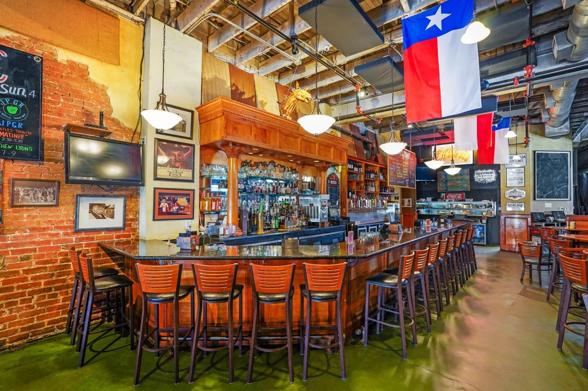

EST. 1976
The Tolbert family
Frank X. Tolbert was a Texas newspaperman. He wrote A Bowl of Red and helped start the Terlingua chili cook-off in 1967.
Frank and his son opened the first Tolbert’s in Dallas in 1976.
Frank’s daughter Kathleen and her husband, Paul Ryan, opened the Grapevine restaurant in 2006.
1967Terlingua’s first cook-off
1976Dallas restaurant opens
2006Grapevine restaurant opens